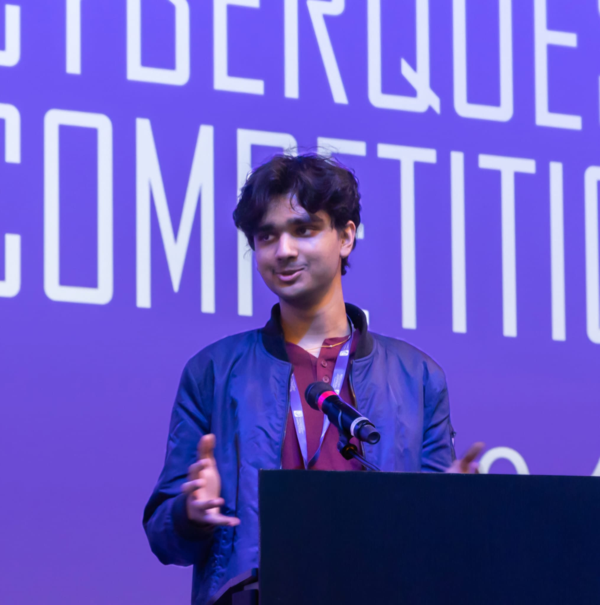

IT Specialist – Networking
Industry-recognized certification validating expertise in network configuration, troubleshooting protocols, and building secure infrastructure.

Building secure solutions at the intersection of technology, law, and equity — one challenge at a time.
A high school student driven by curiosity and a passion for cybersecurity, digital forensics, and criminal justice.
From national CTF competitions to advanced SANS training, I'm constantly expanding my toolkit for defending digital ecosystems. I study how attackers think so I can build stronger defenses.
I tutor students through UPchieve and create compelling short films and video essays that spotlight stories of justice, equity, and emerging technology.
Cyber law and ethical hacking fascinate me — where technical expertise meets policy, compliance, and real human impact.
Currently studying at Independence High School with a focus on cybersecurity, computer science, and advanced STEM coursework. Active competitor in CyberPatriot, 3C Cyber Cup, and Lockheed Martin CTF teams.
Internships, tutoring, and community service — each role building trust, precision, and real-world impact.
Hard-earned credentials and hands-on cybersecurity competition experience.
Industry-recognized certification validating expertise in network configuration, troubleshooting protocols, and building secure infrastructure.
Prestigious recognition for exceptional cybersecurity knowledge, earning $3,000+ in educational benefits and access to the Cyber Foundations Academy.
Industry-recognized certification validating fundamental cybersecurity knowledge, threat mitigation, and network security principles.
Industry-recognized certification validating expertise in securing network infrastructures, identifying vulnerabilities, and applying defense strategies.
Two-year competitor achieving Platinum tier in qualifying rounds, securing and hardening Windows and Linux systems against simulated attacks.
Competing in Network Design, demonstrating expertise in designing secure, efficient network infrastructures for real-world business challenges.
Participant in one of the world's largest cybersecurity competitions, tackling cryptography, reverse engineering, web exploitation, and forensics.
Competed in Lockheed Martin's CTF competition, solving industry-relevant cybersecurity challenges designed by defense sector professionals.
Team competitor defending virtual networks and responding to live cyber threats in a fast-paced competition environment.
Secured 2nd place in Computer Science, demonstrating innovative problem-solving and technical skills under pressure.
Achieved 3rd place, showcasing expertise in capture-the-flag challenges and cybersecurity problem-solving.
Recognized for outstanding leadership, academic achievement, and positive impact throughout the 2022–2023 academic year.
Active competitor in the nation's premier youth cyber defense competition, securing and hardening virtual systems against simulated attacks.
A versatile toolkit spanning cybersecurity, programming, and leadership.
Focus on cybersecurity, computer science, and advanced STEM coursework. Active participant in CyberPatriot, 3C Cyber Cup, and Lockheed Martin CTF teams.
Recognized for strong leadership and academic achievements, including the prestigious Presidential Award.
Follow my journey in cybersecurity, explore projects, and join the conversation on emerging tech and digital equity.
Cybersecurity research, digital forensics, or community tech initiatives — I'm always open to meaningful collaborations.
Send Me a Message